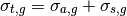
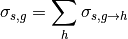

Nuclear Reaction Channels – pyne.xs.channels¶
This module provides an easy interface to very quickly grab multi-group cross sections from the cross section cache and collapse them to the appropriate group structure. The more finely resolved group constants
All functionality may be found in the channels module:
from pyne.xs import channels
The following terminology applies for this module:
- G: The number of low-resolution energy groups, indexed by g.
- N: The number of high-resolution energy groups, indexed by n.
- E_g: The low-resolution group structure [MeV]. Must be monotonic.
- E_n: The high-resolution group structure [MeV]. Must be monotonic in the same direction as E_g.
- phi: Neutron flux [n/cm^2/s].
- E: The incident neutron energy [MeV].
- E’: The exiting neutron energy [MeV].
- theta: The scattering angle [radians].
- M_A: The atomic mass [amu] of the target material.
- T: The temperature [kelvin] of the target material.
Channels¶
- pyne.xs.channels.sigma_t(nuc, T=300.0, E_g=None, E_n=None, phi_n=None)[source]¶
Calculates the total neutron cross section for a nuclide.

Parameters : nuc :
A nuclide name for which to calculate the total cross section.
T : float, optional
Tempurature of the target material [kelvin].
E_g : array-like of floats, optional
New, lower fidelity energy group structure [MeV] that is of length G+1.
E_n : array-like of floats, optional
Higher resolution energy group structure [MeV] that is of length N+1.
phi_n : array-like of floats, optional
The high-fidelity flux [n/cm^2/s] to collapse the fission cross-section over. Length N.
Returns : sig_t_g : ndarray
An array of the total cross section.
- pyne.xs.channels.sigma_f(nuc, E_g=None, E_n=None, phi_n=None)[source]¶
Calculates the neutron fission cross-section for a nuclide for a new, lower resolution group structure using a higher fidelity flux. Note that g indexes G, n indexes N, and G < N. If any of these are None-valued, values from the cache are used. The energy groups and fluxes are normally ordered from highest-to-lowest energy.
Parameters : nuc :
A nuclide name for which to calculate the fission cross-section.
E_g : array-like of floats, optional
New, lower fidelity energy group structure [MeV] that is of length G+1.
E_n : array-like of floats, optional
Higher resolution energy group structure [MeV] that is of length N+1.
phi_n : array-like of floats, optional
The high-fidelity flux [n/cm^2/s] to collapse the fission cross-section over. Length N.
Returns : sigma_f_g : ndarray
An array of the collapsed fission cross-section.
Notes
This always pulls the fission cross-section out of nuc_data library.
- pyne.xs.channels.chi(nuc, E_g=None, E_n=None, phi_n=None, eres=101)[source]¶
Calculates the neutron fission energy spectrum for an isotope for a new, lower resolution group structure using a higher fidelity flux. Note that g indexes G, n indexes N, and G < N.
Parameters : nuc :
A nuclide name for which to calculate the neutron fission energy spectrum.
E_g : array-like of floats, optional
New, lower fidelity energy group structure [MeV] that is of length G+1.
E_n : array-like of floats, optional
Higher resolution energy group structure [MeV] that is of length N+1.
phi_n : array-like of floats, optional
The high-fidelity flux [n/cm^2/s] to collapse the fission cross-section over. Length N.
eres : int
Number of energy-points to integrate over per group.
Returns : chi_g : ndarray
An array of the fission energy spectrum.
See also
- pyne.xs.models.chi
- used under the covers by this function.
- pyne.xs.channels.sigma_s(nuc, T, E_g=None, E_n=None, phi_n=None)[source]¶
Calculates the neutron scattering cross-section for a nuclide.

Parameters : nuc :
A nuclide name for which to calculate the scattering cross section.
T : float
Tempurature of the target material [kelvin].
E_g : array-like of floats, optional
New, lower fidelity energy group structure [MeV] that is of length G+1.
E_n : array-like of floats, optional
Higher resolution energy group structure [MeV] that is of length N+1.
phi_n : array-like of floats, optional
The high-fidelity flux [n/cm^2/s] to collapse the fission cross-section over. Length N.
Returns : sig_s_g : ndarray
An array of the scattering cross section.
- pyne.xs.channels.sigma_s_gh(nuc, T, E_g=None, E_n=None, phi_n=None)[source]¶
Calculates the neutron scattering cross-section kernel for a nuclide for a new, lower resolution group structure using a higher fidelity flux. Note that g, h index G, n indexes N, and G < N. g is for the incident energy and h is for the exiting energy.
Parameters : nuc :
A nuclide name for which to calculate the scattering kernel.
T : float
Tempurature of the target material [kelvin].
E_g : array-like of floats, optional
New, lower fidelity energy group structure [MeV] that is of length G+1.
E_n : array-like of floats, optional
Higher resolution energy group structure [MeV] that is of length N+1.
phi_n : array-like of floats, optional
The high-fidelity flux [n/cm^2/s] to collapse the fission cross-section over. Length N.
Returns : sig_s_gh : ndarray
An array of the scattering kernel.
Warning
This function is currently a stub until the proper way to compute the scattering kernel is determined. This function is safe to use but the results are trivial. This function simply returns an array with the diagonal elements set to sigma_s as computed by pyne.xs.models.sigma_s(). This conserves the calculation of sigma_s_g by summing sigma_s_gh over the h-index.
Notes
This pulls the scattering length out of nuc_data library.
- pyne.xs.channels.sigma_a(nuc, T, E_g=None, E_n=None, phi_n=None)[source]¶
Calculates the neutron absorption cross section for a nuclide for a new, lower resolution group structure using a higher fidelity flux. Note that g indexes G, n indexes N, and G < N.
Parameters : nuc :
A nuclide name for which to calculate the absorption cross section.
E_g : array-like of floats, optional
New, lower fidelity energy group structure [MeV] that is of length G+1.
E_n : array-like of floats, optional
Higher resolution energy group structure [MeV] that is of length N+1.
phi_n : array-like of floats, optional
The high-fidelity flux [n/cm^2/s] to collapse the fission cross-section over. Length N.
Returns : sigma_a_g : ndarray
An array of the collapsed absorption cross section.
Notes
This always pulls the absorption cross section out of the nuc_data.
- pyne.xs.channels.sigma_a_reaction(nuc, rx, E_g=None, E_n=None, phi_n=None)[source]¶
Calculates the neutron absorption reaction cross-section for a nuclide for a new, lower resolution group structure using a higher fidelity flux. Note that g indexes G, n indexes N, and G < N.
Parameters : nuc :
A nuclide name for which to calculate the absorption reaction cross-section.
rx : str
Reaction key. (‘gamma’, ‘alpha’, ‘p’, etc.)
E_g : array-like of floats, optional
New, lower fidelity energy group structure [MeV] that is of length G+1.
E_n : array-like of floats, optional
Higher resolution energy group structure [MeV] that is of length N+1.
phi_n : array-like of floats, optional
The high-fidelity flux [n/cm^2/s] to collapse the fission cross-section over. Length N.
Returns : sigma_rx_g : ndarray
An array of the collapsed absorption reaction cross section.
Notes
This always pulls the absorption reaction cross-section out of the nuc_data.
- pyne.xs.channels.metastable_ratio(nuc, rx, E_g=None, E_n=None, phi_n=None)[source]¶
Calculates the ratio between a reaction that leaves the nuclide in a metastable state and the equivalent reaction that leaves the nuclide in the ground state. This allows the calculation of metastable cross sections via sigma_ms = ratio * sigma_ground. Note that g indexes G, n indexes N, and G < N.
Note: This always pulls the absorption reaction cross-sections out of the nuc_data library.
Parameters : nuc :
A nuclide name for which to calculate the metastable.
rx : str
Reaction key. (‘gamma’, ‘alpha’, ‘p’, etc.)
E_g : array-like of floats, optional
New, lower fidelity energy group structure [MeV] that is of length G+1.
E_n : array-like of floats, optional
Higher resolution energy group structure [MeV] that is of length N+1.
phi_n : array-like of floats, optional
The high-fidelity flux [n/cm^2/s] to collapse the fission cross-section over. Length N.
Returns : ratio_rx_g : ndarray
An array of the ratio of the metastable cross section for a reaction to the ground state reaction.
Notes
This always pulls the absorption reaction cross section out of the nuc_data.

Table Of Contents
Previous topic
Cross Section Cache – pyne.xs.cache
Next topic
ORIGEN 2.2 Support – pyne.origen22